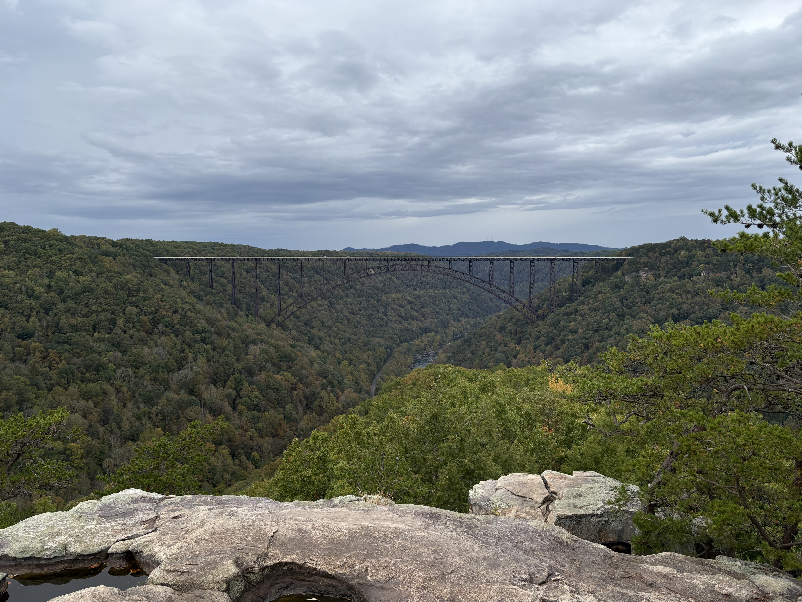
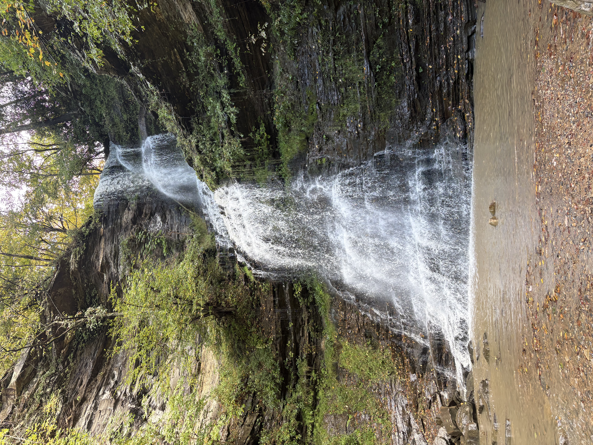
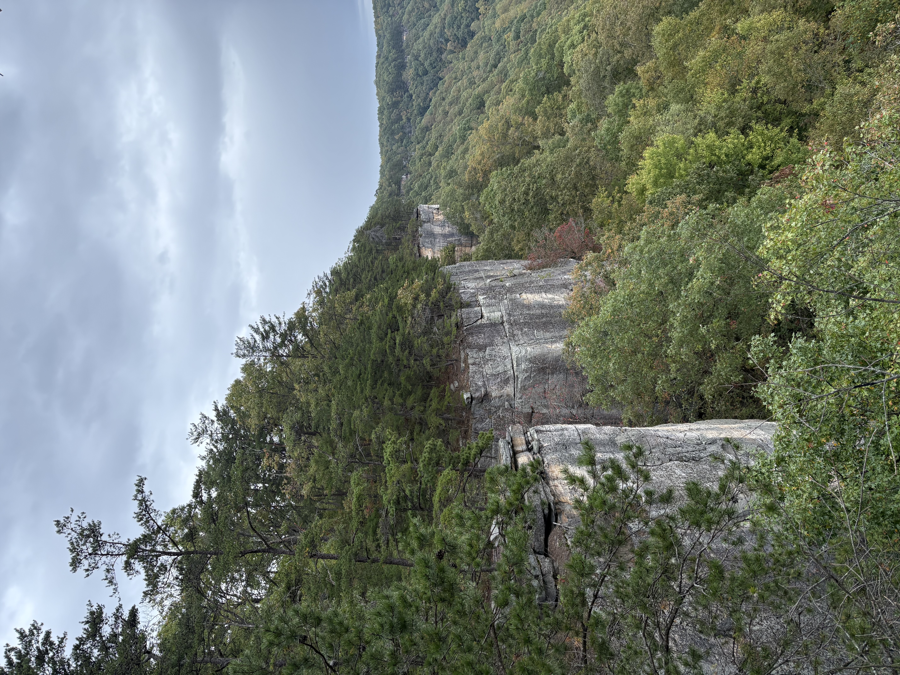
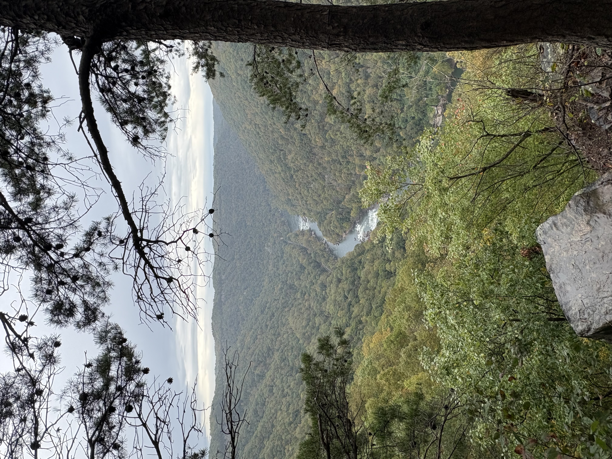

Exploring New River Gorge National Park

Located in West Virginia, New River Gorge National Park is a beautiful destination for those who enjoy hiking, scenic overlooks, and the beautiful forests of Appalachia. The park is named after the gorge that holds the New River and the massive New River Gorge Bridge.
Our Experience
For my fellow Kentuckians, New River Gorge is the perfect weekend trip. The drive takes about 4.5 hours and the park is small enough to get a good experience in just 1-2 days.
We stayed at the beautiful campgrounds called The Outpost at New River Gorge. This campground has many campsite types, but we were glad to have picked a covered campsite because it rained all weekend. Still, we were able to enjoy several hikes, as well as live country music and food trucks during our stay.
The trails were well-maintained and featured thick forestry, many types of mushrooms, and are dog-friendly (not very common for national parks!). We did two of the most popular hikes:
- The Endless Wall trail is an out-and-back trail about 2.5 miles in length each way. It follows along a rim of the gorge and features a few overlooks, with the best view being at Diamond Point. You'll see why it's called the Endless Wall trail!
- The Long Point trail is another out-and-back trail, about 1.5 miles in length each way. The end of this trail has one of the most spectacular views of the New River Gorge Bridge in the park. It was breathtaking and really allowed us to appreciate the scale of the Bridge.



Plan Ahead
While you can walk on the catwalk under the bridge throughout the year, the top of the bridge is not accessible to pedestrians... Except for the 3rd Saturday of every October for the annual Bridge Day festival! The bridge is reserved for pedestrian use, and you can watch BASE jumpers dive into the gorge below. You'll want to book your accommodations months in advance for this due to the limited facilities in the area.
Visit the official National Park Service website for more information about visiting the park.